Ch5_Implementation of ODOO PLM in Collaborative Design <<
Previous Next >> Ch6-2
Ch6_Case Study Design of Steel Ball Balancing Platform
第六章 案例研究：鋼球平衡台的設計
在鋼球平衡台中我們會用到兩種不同領域的理論，數學系統模型以牛頓力學推導運動方程式後使用拉氏傳換將時域轉變成頻域，而另外一項就是自動控制中常見的PID控制器。
6.1 數學系統模型
球體的動態是由物理定律推導出，以微分方程式來表達，我們將使用牛頓力學來得到球的運動方程式，並使用拉氏轉換解之。
6.1.1 簡化與假設
為了得到球在平板上的運動方程式我們需假設球的幾何型態是完全球形且均質、球在平台上只在X方向移動、球在平台上只做滾動無滑動並且不考慮摩擦力。
6.1.2 運動方程式
球的絕對加速度方程式由參考書籍[後期填入]得到。
\begin{equation}\mathbf{a}_a=\dot{\omega} \times \mathbf{r}+\omega \times(\omega \times \mathbf{r})+2 \omega \times \mathbf{v}_{\text {rel }}+\mathbf{a}_{\text {rel }}
\end{equation} (6.1)
接下來我們將(6.1)式改寫為(6.2)，式中\(\mathbf{e}_{k 1}\)和\(\mathbf{e}_{i 1}\)代表單位向量，\(x_p\)代表球相對於座標系的位置，\({\alpha_1}\)代表平台的傾角。
\begin{equation}
\mathbf{a}_1=\ddot{\alpha_1} \mathbf{e}_{k 1} \times x_p \mathbf{e}_{i 1}+\dot{\alpha_1} \mathbf{e}_{k 1} \times\left(\dot{\alpha_1} \mathbf{e}_{k 1} \times x_p \mathbf{e}_{i 1}\right)+2 \dot{\alpha_1} \mathbf{e}_{k 1} \times \dot{x_p} \mathbf{e}_{i 1}+\ddot{x_p} \mathbf{e}_{i 1}
\end{equation} (6.2)
將(6.2)經過簡化整理後得到
\begin{equation}
\mathbf{a}_1= \left( \ddot{x_p} - x_p \dot{\alpha_1}^2 \right) \mathbf{e}_{i 1} + \left( x_p \ddot{\alpha_1} + 2 \dot{\alpha_1} \dot{x_p} \right) \mathbf{e}_{j 1}
\end{equation}
(6.3)
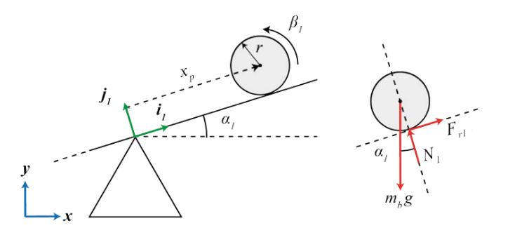 圖6-1
在圖6-1的自由體圖中，從力矩的平衡可以看出球的剩餘力。
\begin{equation}
I_b \ddot{\beta}_1=F_{r 1} r
\end{equation} (6.4)
\(I_b\)是球的質量慣性矩，\(\beta_1\)是球相對於其初始位置在平台中心的角度，\(r\)是球的半徑，\(F_r\)是來自平台對球的作用力，我們假設求在平台上並無滑動所以我們可以根據位置定義相對角度\(\beta\)。
\begin{equation}
\beta_1=-\frac{x_p}{r}
\end{equation} (6.5)
為了求解(6.4)中的Fr，我們將(6.5)式的二次時間導數代入(6.4)式中得到(6.6)式。
\begin{equation}
F_r=-\frac{I_b \ddot{x_p}}{r^2}
\end{equation} (6.6)
球在平台上受到的力和平台對球施加的力之間的平衡，由(6.3)式中的加速度和(6.6)中的力導致，由此的到動態系統的運動方程式。
\begin{equation}
\left(\frac{I_b}{r^2}+m_b\right) \ddot{x_p}+m_b g \sin \alpha_1-m_b x_p{\dot{\alpha_1}}^2=0
\end{equation} (6.7)
為了做拉式轉換我們稍微整理方程式。
\begin{equation}
\ddot{x}=\frac{m_b r_b^2\left(x_p \dot{\alpha}_1^2-g \sin \alpha_1\right)}{m_b r_b^2+I_b}
\end{equation} (6.8)
接下來我們在\(X_p=0\),\(\alpha_1=0\)對(6.8)式作線性化。
\begin{equation}
\ddot{x}=\frac{m_b g \alpha_1 r^2}{m_b r_b{ }^2+I_b}
\end{equation}(6.9)
當\(\alpha_1\)出現小變動時線性化可得(6.9)式。
接下來當我們將Ib也就是球體的質量慣性矩代入我們可以得到(6.10)，我們可以觀察到該系統的運動方程式和該球體的半徑和質量無關。
\begin{equation} \ddot{x}=\frac{5}{7} g \alpha_1 \end{equation}
(6.10)
最後我們對(6.10)作拉式轉換得到(6.11)
\begin{equation}
s^2 X=\frac{5}{7} g A_1
\end{equation}(6.11)
在推導運動運動方程式後我們得到了平台角度和球的關係式，接下來我們利用geogebra進行模擬得到馬達轉角和平台角度的關係圖利用擬合曲線來得到馬達轉角和平台的關係式(圖6-2)而超過正70度的部分由於桿件設計反而造成平台角度下降(由圖6-3可觀察到)，所以我們在最後程式設計的部分有將馬達角度限制，得到方程式後做線性化並拉式轉換就能利用這兩個關係式來獲得整體系統轉移函數。
\begin{equation} \alpha = 0.233371 \theta - 0.293753 \end{equation}(6.12)
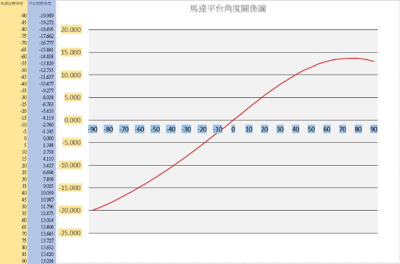
圖6-2

圖6-3
6.2 自動控制理論
我們在1D鋼球平衡台將會使用到PID控制器來控制球體。
6.2.1 PID控制器
PID控制器是目前最廣泛使用的控制器，利用回授系統將訊號回傳就可以利用與設定點的偏差得到e(t)值，接下來我們將介紹PID中P、I、D是如何對系統產生影響。
\begin{equation} u(t)=K_P e(t)+K_I \int_0^t e(\tau) d \tau+K_D \frac{d e(t)}{d t} \end{equation} (6.12)
6.2.2 比例控制律(Kp)
在系統中加入Kp可以增快系統反應速度，但是有可能會造成系統響應阻尼比下降導致系統不穩定。
\begin{equation}U_P(t)=K_P e(t)\end{equation}
(6.13)
6.2.3 積分控制律(Ki)
Ki可以累計誤差，在系統反應初期作用不大，但經過一段時間的累積過後可以藉由先前累積的數據和設定值的平均誤差來讓系統穩定。
\begin{equation} u(t)= K_I \int_0^t e(\tau) d \tau \end{equation} (6.14)
6.2.4 微分控制律(Kd)
對誤差在時域進行微分可以得到誤差隨時間改變的趨勢，能有效預測系統反應，來改善暫態響應增加系統問穩定性。
\begin{equation} u(t)= K_D \frac{d e(t)}{d t} \end{equation}
(6.15)
Ch6-1
1D 系統架構
設計理念
我們以鋼球平衡台作為專題的主體，然後寫程式驅動雷射測距感測器當鋼球遠離時platfor，當鋼球靠近時platform放下，重複此動作直至鋼球平衡台平衡。


馬達角度所對應之平台角度關係

使用solidwork 2023進行繪圖

SOLIDWORKS是一款用於設計各種產品和零件。 模擬和分析： 提供模擬和分析工具，用於測試設計的性能、耐久性和材料屬性。 製造和加工： 支援數控機床編程和工具路徑生成，提高製造效率。 綜合性： 提供組件建模、裝配設計、繪圖生成、動態模擬、流體動力學模擬等多個功能。
platform
第一版本鋼球平衡台的platform軌道長度為200mm整體的寬度為30mm 並給定深度填料11mm


軌道上方寬度為8.5mm下方為7.2mm深4mm並將紅圈處深伸長除料選擇完全貫穿
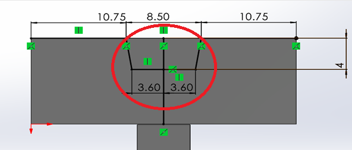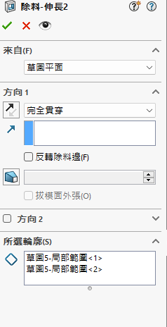
下方配合處長30mm寬6mm 繪製好圖形草圖
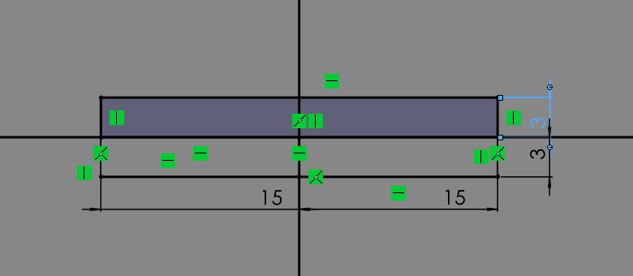
給予尺寸後伸長填料25mm
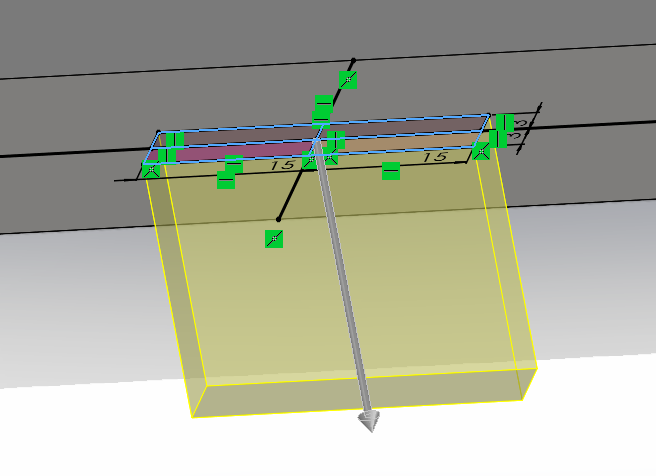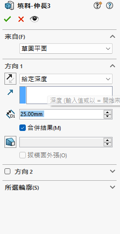
填料完成後再圖形上畫一個2.9mm的小孔並進行伸長除料以便與其他零件配合
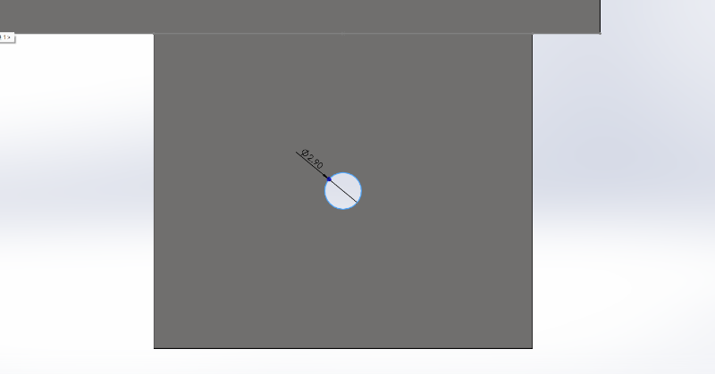
第一版platform完成圖
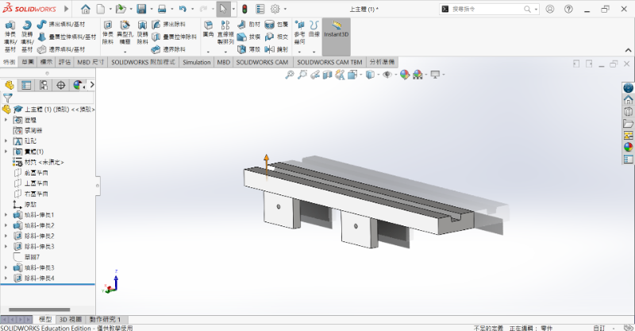
修改部分
軌道上方增加長26.2mm寬2mm的貫穿凹槽，用於放置感應器
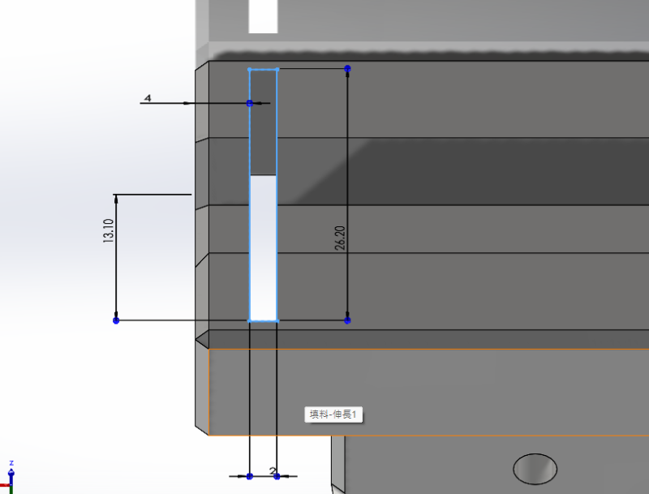
下方接合處新增R10圓角
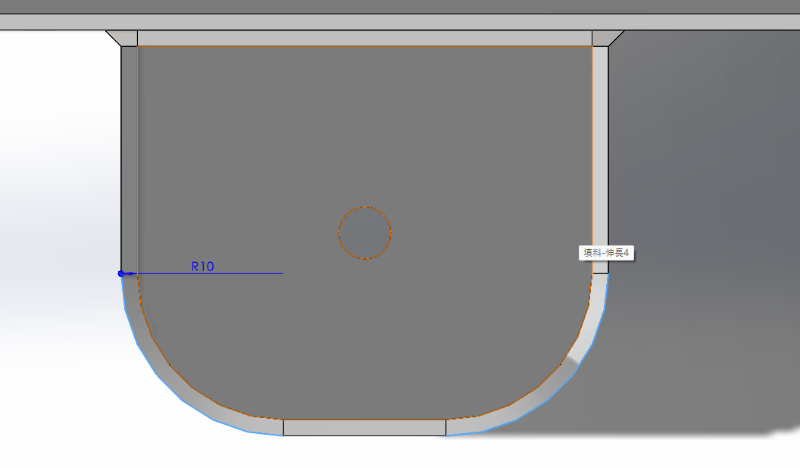
最終Platform零件圖

3D列印成果

base
第一版Base底的長為237mm寬為150mm

在底板長55mm寬54mm處繪製一個12mmX12mm的方形柱並向上填料100mm
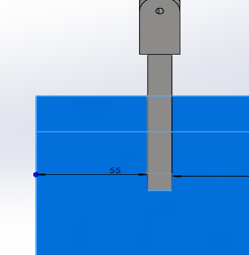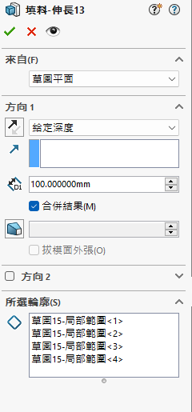
在方柱上方繪製一個長30.28mm寬20的長方體然後在長方體上畫直徑20mm的半圓最後在圓的中心繪製一個3.98mm的小孔最後在長方體上畫一個長30mm寬10.8mm的小長方體伸長除料選擇完全貫穿方便與上方platform配合
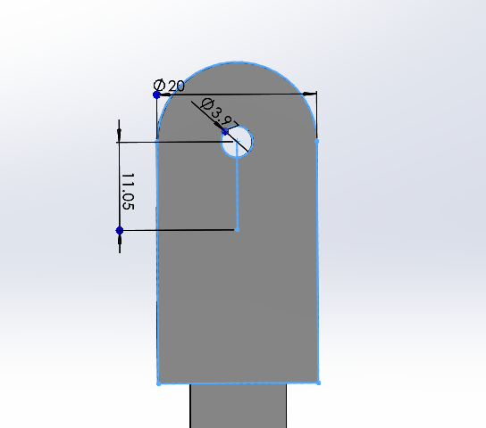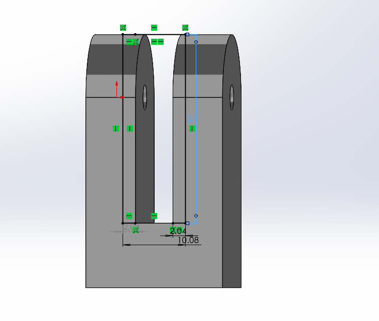
在距離方柱中心長129mm寬25mm處繪製一個長31mm寬20mm向上填料7mm的小平台用來定位馬達
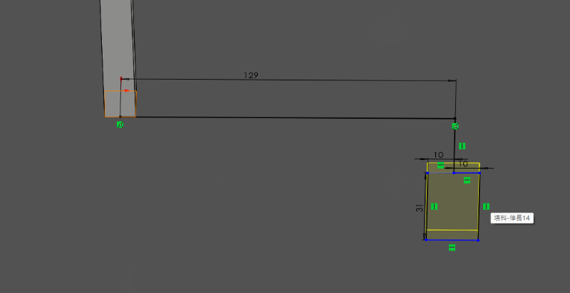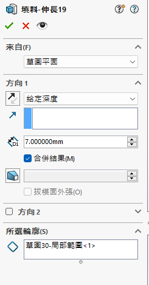
並且在兩邊加畫底15mm高45mm的三角形支撐架防止馬達晃動
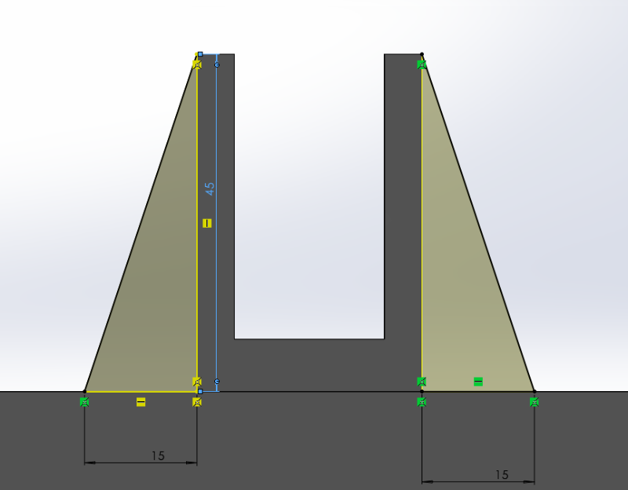
第一版base完成圖
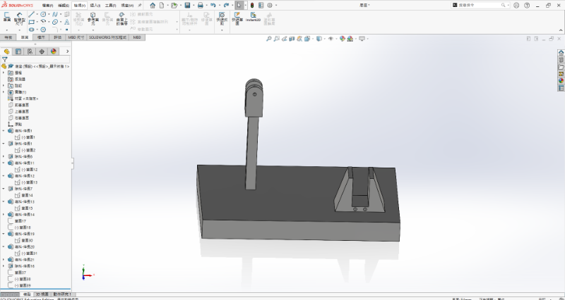
修改部分
底部去除浪費的部分改以長165.6mm圓直徑22.35mm的直狹槽代替
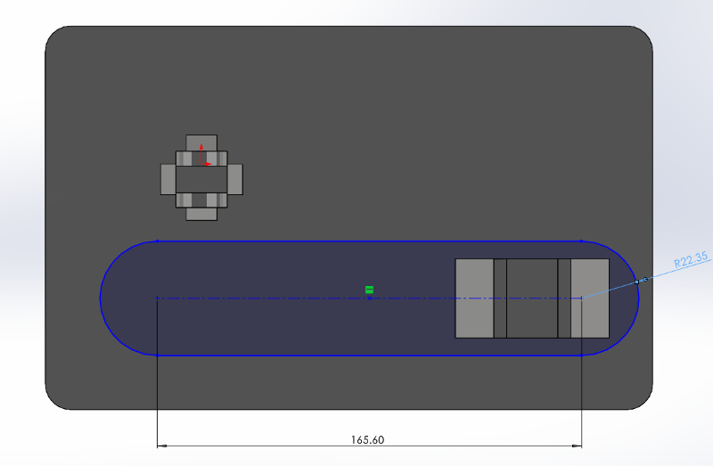
為了好收納將左方柱子拔除留下一凹槽方便後續配合及螺絲孔
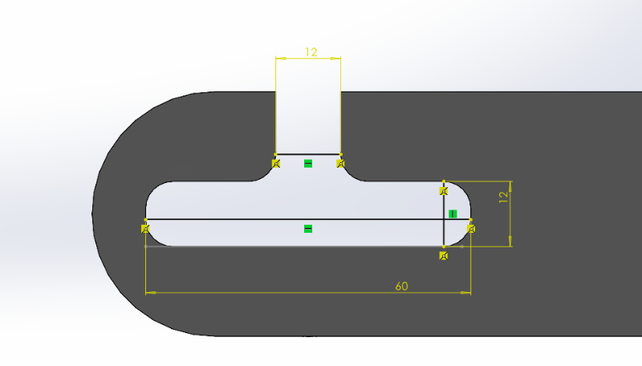
最終base完成圖
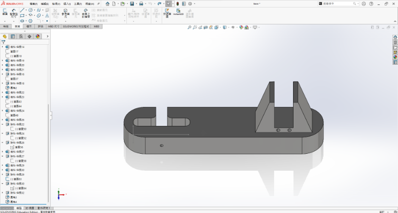
3D列印成果
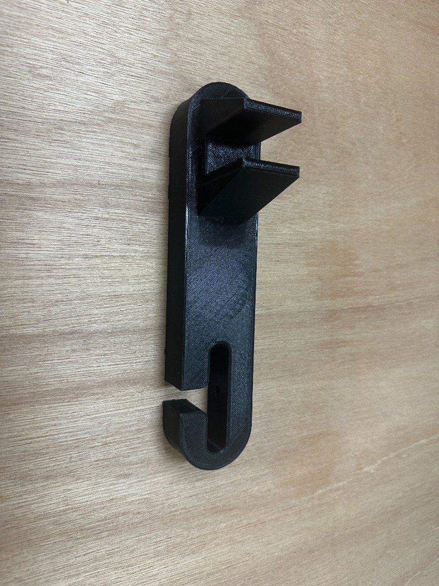
support
從底座拔除的部分目的好收納尺寸都沒有改變
最終support完成圖
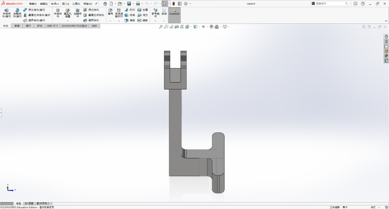
3D列印成果
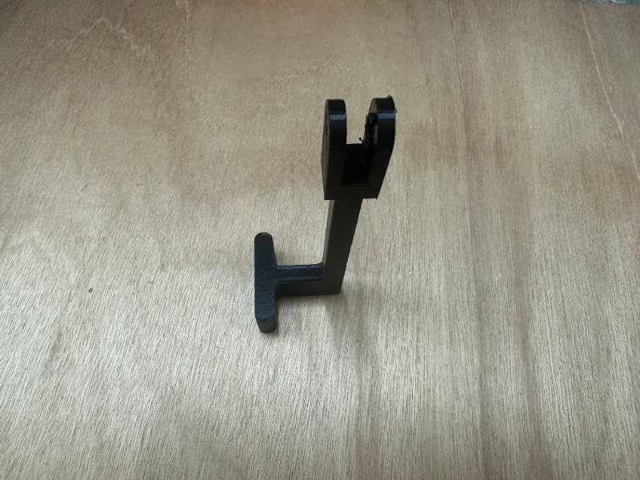
link
上方連結處與support尺寸一致皆為長30.28mm寬20的長方體然後在長方體上畫直徑20mm的半圓最後在圓的中心繪製一個3.98mm的小孔最後在長方體上畫一個長30mm寬10.8mm的小長方體伸長除料選擇完全貫穿方便與上方platform配合
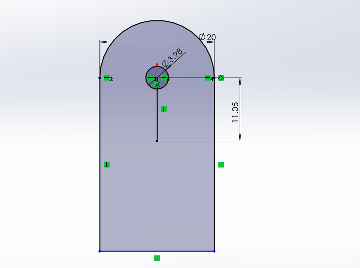
下方為12mmX12mm的方柱並填料68mm方便與馬達進行配合
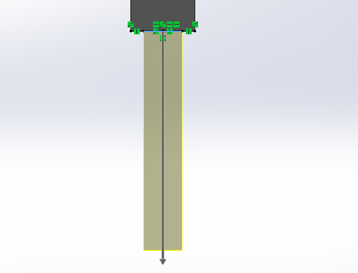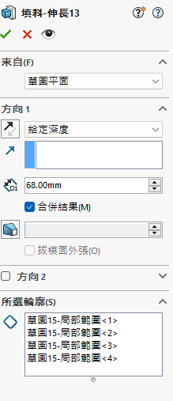
最終link完成圖

3D列印成果

crank
畫一個長36mm寬5mm的crank填料3mm並留兩個3.2mm的圓孔方便鎖上螺栓配合base與link


assemble
組合完成圖


驅動方式
使用金屬齒輪伺服馬達配合程式控制平台
程式放置於6-3
Ch5_Implementation of ODOO PLM in Collaborative Design <<
Previous Next >> Ch6-2